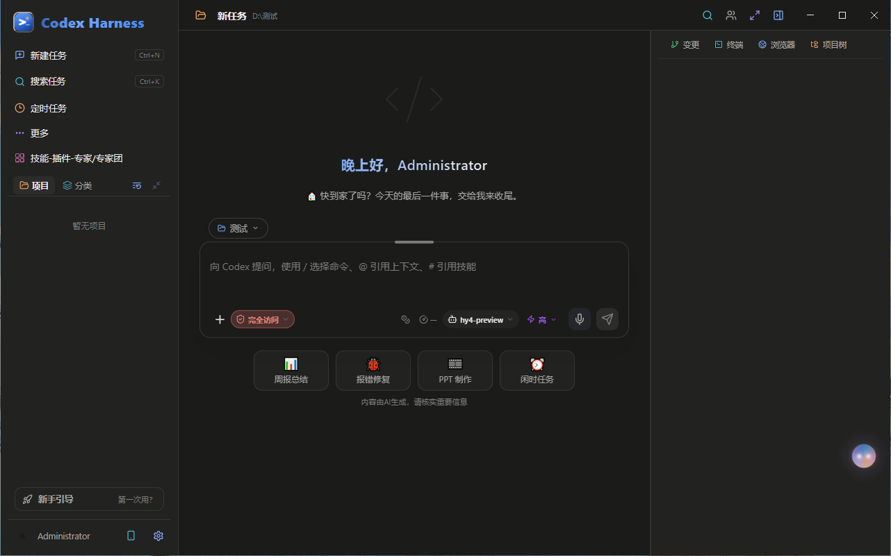
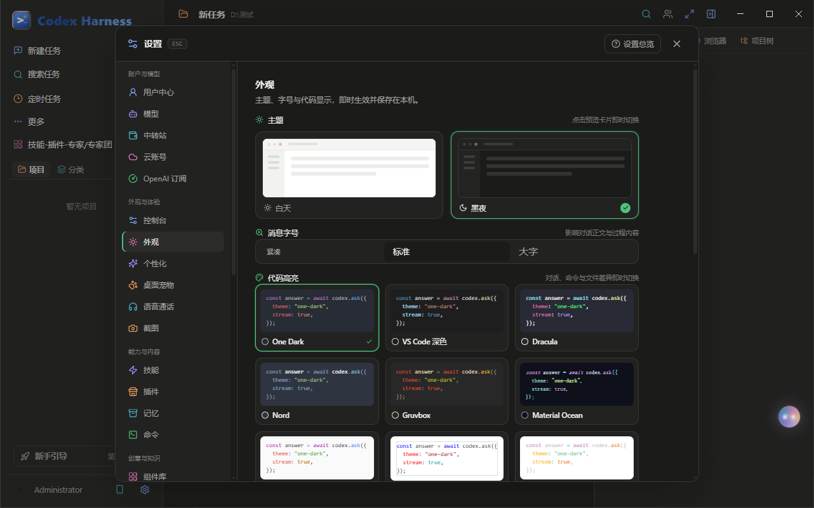
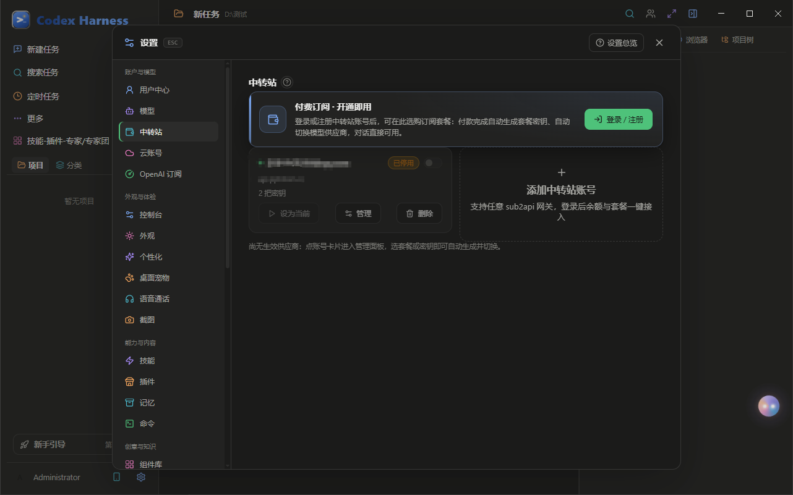

01
多智能体调度
Orchestration把一件事拆给多个角色并行干，而不是排队等一个模型逐句回你。
- 专家 / 专家团 / 子智能体三层分工，头像轨与「办公室」实时呈现谁在忙什么
- 长任务不断线：超过同步等待上限自动转后台，完成时把结果回报给发起会话
- 被调度的会话也是完整成员：能查项目知识库、读写自己的记忆、按角色权限调用宿主能力
普通 AI 工具是"你问一句、它答一句"。PPcode 换了个做法： 把事情分给多个角色同时做，长任务自动转后台，完成时把结果推回你正在的那个会话——对话不用停在原地等。
下面每一条都对应界面里的实际行为，不是营销词。它们共享同一套内核、同一份记忆、同一组权限——所以你派出去的每个角色，都知道自己该做什么、能碰什么。
把一件事拆给多个角色并行干，而不是排队等一个模型逐句回你。
生图、修图、元信息、预览四件套合在一处，生成完直接在应用里看结果。
让机器按你的节奏跑，而不是你盯着它跑。
长期项目最怕的"上次说到哪了"，这里用分层记忆解决。
需要时在，不需要时不占地方。
以下是应用本身截出来的画面——同一套代码，没有额外美化。



不确定架构就看下面的提示。装好之后应用内可以直接检查更新，不用回来找新版。
xattr -cr 回车即可，只需一次：
xattr -cr "/Applications/PPcode.app"
PPcode 不要求你盯着它跑。任务派完就可以切走，完成时会回来找你。